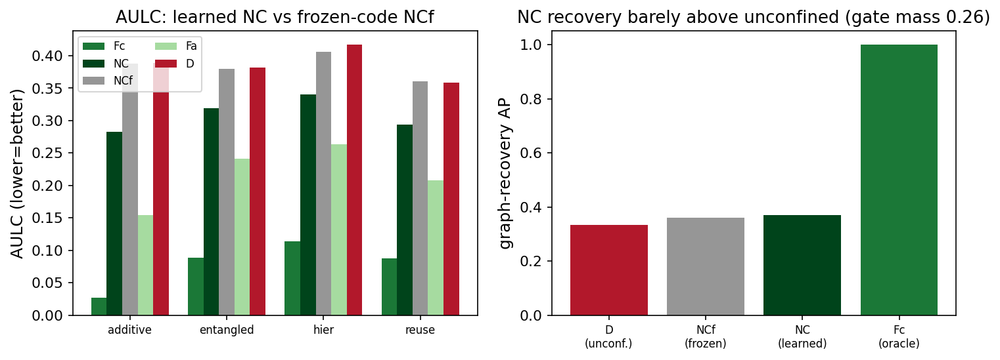

TL;DR. Modularity is prized because it should make learning sample-efficient. We argue the efficiency is not bought by the trained network ending up sparse, but by confining the search to a sparse computation graph throughout training — a wiring cost selects modularity, it does not create it. We prove this for discrete targets, then test it with a confinement ladder on random sparse computation graphs. An oracle confined to the true graph (Fc) beats an unregularized net 14.5× in area-under-the-learning-curve, stays flat as the ambient dimension grows, and recovers the wiring perfectly (AP 1.00); a collapsing learned price (L) ties no regularizer; plain \(\ell_1\) never reaches the oracle. The decisive test rules out the map's functional sparsity as a hidden efficiency channel (the pre-registered falsifier never fires) and the off-diagonal cell pins the gain to confinement; causal dose–response and a continuous-rate test confirm confinement is the cause and is ambient-dimension-free; and a learned non-collapsing gate (NC) beats the baseline but recovers the wiring only barely above chance — a learned cost confines, but not yet to the correct graph. thesis supported
1. The question
Modularity is prized for sample efficiency: a modular learner should need far fewer examples, fitting a few small pieces instead of one dense high-dimensional map. This report asks where that efficiency comes from, and shows the common intuition — “the network became sparse, so the sparsity is what helped” — mislocates it. The argument hinges on three properties that coincide on a hand-built example but are distinct:
- Functional sparsity — a property of the map \(f^\star\): it has only low-order input interactions (e.g. \(f^\star(x)=\sum_k g_k(x_{S_k})\), each \(S_k\) small). Measured by \(\mathrm{F}\).
- Structural modularity — a property of the trained network's realization: the weights, contracted onto units, route along a low-fan-in graph. Measured by \(\mathrm{S}\).
- Confinement — a property of the search: the architecture/prior restricts the sparse-graph hypothesis class throughout training, not just at the endpoint.
The thesis. Efficiency is bought by confinement, not by functional sparsity of the returned map: a dense, unconfined net can compute a perfectly sparse \(f^\star\) and still be sample-hungry, because the search ranged over all maps the whole time. The cleanest evidence is that off-diagonal case — a maximally sparse task where the unconfined learner is many-fold less efficient than the confined one despite both computing the same function (§6.2).
2. Theory
Let \(G=(V,E)\) be a computation graph: a DAG with \(N\) nodes over \(d\) inputs, max fan-in \(r\), each non-input node a map of its \(\le r\) parents. Let \(\mathcal{H}_G\) be the maps realizable by the fixed structure \(G\) and \(\mathcal{H}_{\mathrm{all}}\) all maps on \(d\) inputs. With the realizable sample bound \(n(\mathcal{H})=\Theta(\epsilon^{-1}\log|\mathcal{H}|)\) and alphabet size \(D\),
\[\begin{equation}\label{eq:counting} \log|\mathcal{H}_G|=\!\!\sum_{v\notin V_{\mathrm{in}}}\!\! D^{|\mathrm{pa}(v)|}\log D \;\le\; N D^{r}\log D, \qquad \log|\mathcal{H}_{\mathrm{all}}|=D^{d}\log D, \end{equation}\]so sample complexity is governed by the fan-in \(r\), not the ambient dimension \(d\): the confined/unconfined ratio is \(O\!\big(N D^{-(d-r)}\big)\), exponential in \(d-r\) (Prop. 1). And endpoint sparsity does not fix the curve: a learner over \(\mathcal{H}_{\mathrm{all}}\) that has seen \(n\) inputs still errs on a \(\Theta(1)\) fraction of the rest, so two learners can output the same \(f^\star\) on curves separated by the Eq. \eqref{eq:counting} gap (Prop. 2). The curve is fixed by what the search ranged over, not by the returned point.
Continuous targets. The same holds through approximation rates: with \(s\)-Hölder node functions, a sparse estimator matching \(G\) attains a risk exponent set by the fan-in, an unconfined \(s\)-smooth estimator of \(d\) variables one set by the ambient dimension:
\[\begin{equation}\label{eq:rate} \underbrace{\;n^{-\,2s/(2s+r)}\;}_{\text{confined (tracks } r\text{)}} \qquad\text{vs.}\qquad \underbrace{\;n^{-\,2s/(2s+d)}\;}_{\text{unconfined (tracks } d\text{)}} \quad\text{(up to log factors; Schmidt-Hieber 2020).} \end{equation}\]Finally, a learned pricing collapses: with a penalty \(\lambda\sum_{ij} c(\phi_i,\phi_j)\,|W_{ij}|\) over free codes \(\phi\), the codes drift together so \(c\to 0\) and the penalty vanishes with the weights untouched — confinement evaporates, the search reverts to \(\mathcal{H}_{\mathrm{all}}\), and it inherits the dense sample complexity. This is why the L condition below should match the baseline.
Numerical gate. src/theory_check.py validates
Eqs. \eqref{eq:counting}–\eqref{eq:rate} by direct version-space counting
(\(D{=}3,\,r{=}2\)): the confined learner reaches near-zero error at \(n^\star{=}32\)
independently of \(d\) (identical at \(d{=}8,11\)), and the gap is exactly
\(D^{\,d-r}\) — 729× at \(d{=}8\), 19 683×
at \(d{=}11\). The first control: if the counting were wrong, nothing downstream would be
worth interpreting.

3. Task family
The decisive test needs the structural and functional axes swept independently over many
instances, which hand-built examples cannot give. So the harness generates an ensemble — a
random reduced DAG \(\mathcal{G}(d_{\mathrm{eff}},\nu,N,r,\Delta,\kappa,\varepsilon,s)\)
(src/cgraph.py):
- \(d_{\mathrm{eff}}\) signal inputs plus \(\nu\) nuisance inputs that are present but never read. Ambient \(d=d_{\mathrm{eff}}+\nu\) thus moves independently of structure — the lever that grows the search space without changing the function (experiments 2 and 4).
- \(N\) nodes in \(\Delta\) tiers, each reading \(\le r\) parents from earlier tiers (reuse \(\kappa\) biases toward used parents; entangler \(\varepsilon\) optionally adds a cross-tier edge); each node is a random \(s\)-Hölder function (small \(s\) = harder). The readout is the mean of terminals, so \(\Delta{=}1\) is additive \(f^\star=\mathrm{mean}_k\,g_k(x_{S_k})\) and \(\Delta{>}1\) a fan-in-\(r\) composition.
- each instance emits its ground truth — \(E(G)\), tiers, the nuisance partition, a wrong graph \(G'\), and the analytic \(f^\star\) — and is reduced (every signal input read) by construction.
The wiring \(E(G)\), concretely. \(E(G)\) is the graph's edge set: the ordered pairs \((v\!\to\!u)\) over the node set \(V=\{d\text{ input nodes}\}\cup\{N\text{ computation nodes}\}\cup\{\text{sink }O\}\), one per parent\(\to\)child link, meaning node \(u\) reads node \(v\). It is the ground-truth wiring that every oracle charges against and the recovery metric scores against. The wrong graph \(G'\) is a second edge set drawn with the same tier layout and fan-in\(\,\le r\) but computation wiring unrelated to \(E(G)\) (it drives the Fw condition); each terminal still feeds the sink, so \(G'\) realizes the same observable as \(G\) but routes it differently.
Named regimes are points in the family: additive (\(\Delta{=}1\)), hierarchical (tree, \(\Delta{>}1\)), reuse-heavy (large \(\kappa\)), weakly-entangled (\(\varepsilon{>}0\)), and dense-negative (\(r\approx d_{\mathrm{eff}}\) — the necessity control).
4. The ladder
Every condition trains the same MLP (depth \(\Delta{+}2\), width 128) so capacity never confounds; only the per-neuron prior differs. To price wiring on the weights, every MLP unit is given a graph-node label \(\mu\): an input unit takes its coordinate's node (a signal or a nuisance node), the \(m\) hidden units at each boundary are split into the \(N\) computation nodes by contiguous blocks (\(\mu_i=\mathrm{comp}[\lfloor iN/m \rfloor]\), \(\sim m/N\) units per node), and the lone output unit is the sink \(O\). A weight \(W^{(\ell)}_{ij}\) then carries a sender node \(\mu_j\) and a receiver node \(\mu_i\), and the oracle cost charges it for crossing a node pair that is not an edge of \(G\),
\[\begin{equation}\label{eq:oracle} \mathcal{R}(W)\;=\;\frac{1}{L}\sum_{\ell=1}^{L}\ \operatorname*{mean}_{i}\ \sum_{j} \, c(\mu_i,\mu_j)\,\bigl|W^{(\ell)}_{ij}\bigr|, \qquad c(\mu_i,\mu_j)=\begin{cases}0 & (\mu_j\!\to\!\mu_i)\in E(G)\cup\{\text{identity}\}\\ 1 & \text{else,}\end{cases} \end{equation}\]The cost \(c(\mu_i,\mu_j)\) is a fixed \(0/1\) table on node pairs — \(0\) when \((\mu_j\!\to\!\mu_i)\) is a true edge of \(E(G)\), or the identity \(\mu_i{=}\mu_j\) so a node's value can pass through intermediate layers, and \(1\) otherwise. It is read off the ground-truth wiring once at initialization and held fixed (no learnable state); a learned condition instead prices a distance between learned codes (see below). The penalty is summed over senders, averaged over receivers, so each receiver pays its full off-graph incoming mass and per-weight pressure is invariant to \(\nu\) (needed for the flat-in-\(d\) signature of experiment 4). Each rung below adds \(c\,\mathcal{R}\) to the MSE (\(c\) annealed \(0\!\to\!c\) over the first \(10\%\) of steps; \(\phi\) are learned per-node codes, \(\operatorname*{mean}_i\) a receiver average and \(\sum_j\) a sender sum), spanning how — and how correctly — the search is confined:
| Cond. | method id | confines to | what it is / what it tests |
|---|---|---|---|
| D | baseline.noreg | \(\mathcal{H}_{\mathrm{all}}\) | \(\mathcal{R}=0\) — the unconfined baseline; also the implicit-bias probe (does plain GD confine for free? predicted: no). |
| L1 | nr.empty-flat-abs | — | plain \(\ell_1\), \(\mathcal{R}=\operatorname*{mean}|W|\): shrinks magnitudes but is blind to the nodes — separates confinement from generic sparsity. |
| L | nr.cgl-euc-abs | \(\mathcal{H}_{\mathrm{all}}\) (eff.) | distance-priced learned codes, \(\mathcal{R}=\operatorname*{mean}_i\sum_j\|\phi_{\mu_i}{-}\phi_{\mu_j}\|\,|W_{ij}|\), penalty-only ⇒ collapses (\(\phi\) coincide); must forfeit the gain (\(\approx\)D). |
| Fc | nr.cgfc-bin-abs | \(\mathcal{H}_{G}\) | oracle — Eq. \eqref{eq:oracle} with the true \(E(G)\) (cost 0 on edges, 1 else). The ceiling and positive control. |
| Fr | nr.cgfr-bin-abs | \(\mathcal{H}_{G}\) | Fc with codes through a fixed orthogonal frame; distances are preserved ⇒ \(\equiv\)Fc (frame-invariance check). |
| Fa | nr.cgfa-bin-abs | \(\mathcal{H}_{r,N}\) | structure-agnostic fan-in budget, \(\mathcal{R}=\operatorname*{mean}_i\sum_k\log(1{+}\|W_{i,k}\|_2/\eta)\) over sender-node groups \(k\): bounded fan-in from \((N,r)\), not \(E(G)\). |
| Fw | nr.cgfw-bin-abs | \(\mathcal{H}_{G'}\) | Eq. \eqref{eq:oracle} on a wrong graph \(E(G')\). Tests that mis-confinement hurts. |
| Fm | nr.cgfm-bin-abs | interpolates | Eq. \eqref{eq:oracle} with a fraction \(\tau\) of edges rewired toward \(G'\) (\(\tau{=}0{\equiv}\)Fc, \(\tau{=}1{\equiv}\)Fw). The correctness-dose knob (experiments 6, 8). |
| WL | nr.cgwl-bin-abs | local wiring | wiring-length \(\mathcal{R}=\operatorname*{mean}_i\sum_j|\mathrm{tier}_i{-}\mathrm{tier}_j|\,|W_{ij}|\): tier-distance, depth only (not \(E(G)\)). A second mechanism (experiment 7). |
| NC | nr.cgnc-euc-abs | \(\mathcal{H}_{G}\) (discovered) | non-collapsible learned gate (§6.7): codes gate the weights \(\tilde a_{ij}{=}g_{ij}W_{ij}\), \(g_{ij}{=}g_0{+}(1{-}g_0)e^{-\|\phi_i-\phi_j\|^2/\tau^2}\), penalizing open-gate mass \(\operatorname*{mean}g_{ij}\). Tests whether a learned cost discovers the wiring. |
5. Metrics
Four quantities, computed on disjoint draws (no peeking), with fixed-rule thresholds. Two of them (S, B) read the trained weights through one common contraction: sum \(|W|\) along the node labels into a node-to-node adjacency
\[\begin{equation}\label{eq:adj} a(u\!\to\!v)\;=\;\sum_{\ell}\ \sum_{i:\,\mu_i=v}\ \sum_{j:\,\mu_j=u}\ \bigl|W^{(\ell)}_{ij}\bigr|, \end{equation}\]the realized weight mass routed from node \(u\) to node \(v\) (the identity \(u{=}v\) is excluded). The four are:
- A — sample efficiency (AULC). Area under the test-MSE-vs-\(\log n\) curve, the headline number (lower is better): \[\begin{equation}\label{eq:aulc} \mathrm{A}=\frac{1}{\log n_{\max}-\log n_{\min}}\int \widehat{\mathrm{MSE}}(n)\,\mathrm{d}\log n . \end{equation}\]
- S — structural recovery (confinement proxy). Rank every DAG-valid candidate edge \(u\!\to\!v\) (those with \(\mathrm{tier}(u)<\mathrm{tier}(v)\)) by \(a(u\!\to\!v)\) and score the ranking against \(E(G)\) by average precision \[\begin{equation}\label{eq:ap} \mathrm{AP}=\frac{1}{|E(G)|}\sum_{k:\,e_k\in E(G)}\frac{\bigl|\{e_{k'}\in E(G):k'\le k\}\bigr|}{k}, \end{equation}\] the mean of precision-at-\(k\) taken at the ranks of the true edges (calibration-free; chance \(=|E(G)|/|\text{candidates}|\), reported alongside). The companion effective fan-in is the mean number of sender node-groups whose group-norm exceeds \(\tfrac14\) of a receiver's maximum (a fixed rule): confined nets sit near \(r\), dense near \(N\).
- F — functional sparsity of the map. Total higher-order Sobol mass \[\begin{equation}\label{eq:fmass} \mathrm{F}=1-\sum_{i=1}^{d}S_i,\qquad S_i=\frac{\mathbb{E}\bigl[f_B\,(f_{AB^i}-f_A)\bigr]}{\operatorname{Var} f}, \end{equation}\] where \(S_i\) is the first-order Sobol index of input \(i\) by the Saltelli pick-freeze estimator (\(A,B\) independent input draws, \(AB^i\) equal to \(A\) but with coordinate \(i\) taken from \(B\)), evaluated on the analytic \(f^\star\). \(\mathrm{F}\approx0\) for an additive/sparse map, \(\to1\) when interactions dominate. S is of the realization, F of the map — that dissociation powers experiment 2.
- B — realized off-graph communication. The fraction of contracted mass on candidate edges not in \(E(G)\), \[\begin{equation}\label{eq:bcomm} \mathrm{B}=\frac{\sum_{e\notin E(G)}a_e}{\sum_{e\in\text{candidates}}a_e} \end{equation}\] (low B = routes along the true wiring). Mechanism-agnostic, for experiment 7.
Setup
Every run trains one MLP (width 128, depth \(\Delta{+}2\), ReLU; a same-shape gated MLP for NC) with AdamW (learning rate \(2\times10^{-3}\), \(\beta=(0.9,0.999)\), default weight decay \(0.01\)), a cosine schedule, batch 64, up to \(6000\) steps, with early stopping (patience 25, evaluated every \(5\%\) of steps) and the best-validation checkpoint restored. The penalty coefficient is annealed \(0\!\to\!c\) over the first \(10\%\) of steps. Inputs are \(\mathcal{N}(0,1)\); training sizes run on a log grid (\(n\in\{32,\dots,4096\}\), or a \(\{64,\dots,2048\}\) core for the larger sweeps); the \(4096\) evaluation points are split into disjoint validation (selection / early-stop) and test halves, with a separate extrapolation draw at \(\sigma{=}1.5\).
Each seed draws a fresh graph and a fresh initialization, so distributions are over graph\(\times\)init jointly: 6 seeds for the ladder (E1/E8), 6 graphs per cell for the E2 ensemble, 5 seeds for E5/E6. Each condition's coefficient \(c\) is chosen on the validation split and reported once on test (val-picks / test-once). Uncertainty is reported as 95% bootstrap percentile intervals — 2000 resamples over seeds for per-condition AULC, and a 3000-resample cluster bootstrap over graphs for the E2 coefficients; condition contrasts use a paired Wilcoxon test with Holm correction per cell, plus a better-powered pooled cell\(\times\)seed contrast (Cohen's \(d_z\)) where the prediction is cell-agnostic. The tiny MLPs run on CPU; the discrete theory gate and every metric are recomputed from the run shards.
Controls
No learned condition is interpreted until the gate
passes: Fc must beat D on a sparse task, the dense-negative must show no gain, L
must match D, \(\ell_1\) must fall short of Fc, and train fit must be comparable (so an AULC
gap is generalization, not underfitting). On a sparse additive cell all seven pass
(src/controls.py):
| Fc | Fw | Fa | L1 | L | D | dense-neg (Fc vs D) | |
|---|---|---|---|---|---|---|---|
| test MSE | 0.0048 | 0.0105 | 0.0237 | 0.0277 | 0.156 | 0.163 | 0.052 vs 0.050 |
| recovery AP | 1.00 | 0.72 | 0.34 | 0.59 | 0.21 | 0.22 | — |
Fc beats D 34× and recovers the wiring perfectly; L\(\approx\)D (collapse forfeits the gain); L1\(\gg\)Fc (shrinkage sparsifies but does not route); the dense-negative shows no gain (sparsity is necessary). Sweeping the ambient dimension, Fc is flat while D degrades 16× — the scaling signature in miniature. These same controls cover the necessity and frame checks (\(\lambda{=}0\) reproduces D; Fr\(\equiv\)Fc), so the results need no separate experiment for them. Only with the gate green do we read the campaign.
6. Results
Each condition's coefficient is tuned on a held-out validation split (val-picks / test-once), reporting distributions over graph×init seeds. The ladder predictions are cell-agnostic, so the powered test pools the paired \((\text{cell},\text{seed})\) AULC differences (per-cell Wilcoxon at six seeds is underpowered); we lead with effect sizes and bootstrap CIs.
6.1 E1 — the confinement ladder
Ranking the learning curves places the oracle ceiling, shows the collapse forfeits the gain, and checks the structure-agnostic budget against shrinkage. Across all four decomposable cells the AULC orders \(\mathrm{Fc}\approx\mathrm{Fr} < \mathrm{Fw} < \mathrm{Fa} < \mathrm{L1} < \mathrm{L}\approx\mathrm{D}\). Fc is the ceiling, beating D in \(24/24\) pooled pairs (Cohen's \(d_z{=}-3.0\), \(p\approx1.2\times10^{-7}\); \(14.5\times\) on the additive cell). L\(\approx\)D (collapse within \(1\%\) of no regularizer); Fr\(\approx\)Fc (frame invariance); L1\(<\)Fc (\(d_z{=}-2.35\), shrinkage never reaches the ceiling). The one departure from the literal prediction is Fw\(<\)D (not \(\le\)): a wrong sparse graph still ignores nuisance and bounds fan-in, confining to a wrong corner of \(\mathcal{H}_{r,N}\) — confirming that “bounded fan-in, not knowing the exact graph” is the operative restriction (a depth sweep, §6.8, shows this holds at every \(\Delta\), with exact-wiring correctness a diminishing premium as composition deepens). NC lands between Fa and D (§6.7).

6.2 E2 — structural vs. functional
This experiment was designed to separate the thesis from its rival — regress efficiency on the two competing explanations,
\[\begin{equation}\label{eq:e2} \mathrm{A}\;\sim\;\beta_S\,\mathrm{S}\;+\;\beta_F\,\mathrm{F}\;+\;(\text{graph, seed random effects}), \end{equation}\]with the structural axis S moved by the condition and the functional axis F by \((r,\varepsilon)\). The pivotal cell is the off-diagonal one: a dense net (D) computing a maximally sparse additive \(f^\star\) — high functional sparsity, low confinement; if efficiency tracked F it would be cheap. The pre-registered falsifier is a significant negative \(\beta_F\) (sparse-but-unconfined maps generalizing for free, i.e. plain GD confines on its own).
The result corrects the experiment's own premise. Over the full ensemble (120 rows, 24 graphs) the fit gives \(\beta_S=-0.079\) and \(\beta_F=+0.133\), but the apparent \(\beta_S<0\) is an artifact of the oracle ceiling, not evidence that recovery tracks efficiency: Fc saturates the recovery metric at \(\mathrm{S}{=}1.0\) on every graph, and dropping those 30 degenerate rows the interior slope is \(\beta_S=+0.005\) (CI \([-0.035,0.035]\), straddling zero). The reason is itself the finding: Fa is as efficient as the oracle is structured without recovering the graph (recovery AP \(0.44\approx\)D's \(0.43\), yet AULC \(0.28\) beats D's \(0.38\)). Graph-recovery AP measures confinement to the correct graph; Fa confines to bounded fan-in (\(\mathcal{H}_{r,N}\)) instead, invisible to the metric — the same mechanism-plurality lesson as E7 (§6.6). So the regression does not cleanly isolate S. What it does show robustly, in both fits, is \(\beta_F>0\) (CI \([0.094,0.165]\) full, \([0.062,0.156]\) trimmed): the pre-registered falsifier — a negative \(\beta_F\) — never fires, so endpoint functional sparsity is not a hidden efficiency channel.
The confinement claim therefore rests not on the regression slope but on the off-diagonal cell and the causal dose: on the maximally sparse additive task the unconfined D is 14.5× less efficient than Fc despite both computing the same map, and raising the oracle coefficient drives AULC down as recovery rises (\(\rho(\mathrm{A},\mathrm{S})=-0.91\), §6.5). Efficiency follows confinement, not the map's endpoint sparsity.

6.3 E4 — scaling in the ambient dimension
The counting argument predicts a gain exponential in \(d-r\). Holding structure fixed and growing the ambient dimension via \(\nu\), the confined curve should be flat while the unconfined degrades — the direct image of Eq. \eqref{eq:counting}. Sweeping \(\nu\in\{0,8,16,32,64\}\), the confined Fc AULC is flat (slope \(2\times10^{-4}\)) while D and L degrade linearly (\(6.3\times10^{-3}\), \(26\times\) steeper); the Fc/D gap widens to \(14\times\) at \(\nu{=}64\). The agnostic budget Fa is intermediate (a hard cost zeroes nuisance weights; the soft penalty only mostly).

6.4 E5 — the continuous decay rate
For real-valued targets the counting argument's analogue is a rate: Eq. \eqref{eq:rate} predicts the confined error decays with an exponent set by the fan-in \(r\) and independent of \(d\), the unconfined one set by \(d\). Sweeping \(s,r,d\) on additive cells and fitting the log–log slope of test MSE vs \(n\), the robust signature holds: growing the ambient dimension, the confined rate does not degrade (exponent slope in \(\nu\): \(+7.0\times10^{-3}\)) while the unconfined rate falls (\(-9.1\times10^{-3}\)). The raw curves make it vivid: confined curves at \(d{=}6\) and \(d{=}70\) both reach the floor, while the unconfined \(d{=}70\) curve is still stuck at \(n{=}8192\). We do not read absolute exponents off these finite-width fits — easy low-\(r\) cells plateau at the floor, so the tail slope is an artifact — but the \(d\)-invariance of the confined rate is the point, agreeing with the counting (§2) and AULC scaling (§6.3).

6.5 E6 — causal ablations
E6 makes confinement causal by perturbing it with the task fixed, three ways. (a) Strength: raising the oracle coefficient from 0 (= D), AULC falls monotonically as realized S rises (Spearman \(\rho=-0.91\)) — a causal \(\mathrm{A}\)-vs-S curve. (b) Correctness: rewiring a fraction \(\tau\) of edges toward the wrong graph raises AULC (\(\rho=+0.30\)), with \(\tau{=}0\) (true graph) best. The middle is deliberately non-monotone: a fully but coherently wrong sparse graph (\(\tau{=}1\)=Fw) still bounds fan-in, so it beats an incoherent partial rewiring — the same Lemma 2 effect as E1's Fw\(<\)D. (c) Timing: confinement throughout is best (AULC \(0.021\)); releasing it early (\(0.029\)) or delaying it (\(0.034\)) both forfeit part of the gain, yet stay far below the unconfined baseline (\(0.284\)) — it must act while data is scarce, though even part-time confinement leaves a large imprint.

6.6 E7 — mechanism universality
Is the graph cost special, or does any mechanism that lowers communication buy the same efficiency? We realize confinement three ways — the graph oracle (off \(E(G)\)), a spatial wiring-length cost (by tier-distance; depth only), and a structure-agnostic fan-in budget — each swept over its coefficient, and plot AULC against the off-graph communication B. The prediction was a single curve \(\mathrm{AULC}(B)\). Instead: every mechanism confines (each monotone in its strength, all below the baseline), but they do not share one \(\mathrm{AULC}(B)\) curve — and that is the finding. The oracle and fan-in budget improve as off-graph mass falls (\(\rho=+1.0\)); wiring-length improves as it rises (\(\rho=-1.0\)), shortening edges toward local wiring that is cheap but off-graph. The mechanisms head different ways in the \((B,\mathrm{AULC})\) plane, so no single “communication-left” scalar captures all of them — the pre-registered “separation is informative” outcome: confinement is real and mechanism-plural.

6.7 NC — learned gating
Every confining condition so far is an oracle or a fixed budget — none learns the wiring, yet a learned code is the whole point of a neuron-representation prior. A penalty-only learned price collapses (§2): the codes drift together to zero the penalty while the weights stay dense. NC closes that escape by letting the codes gate the effective weights instead of pricing them,
\[\begin{equation}\label{eq:gate} g_{ij}=g_0+(1-g_0)\,e^{-\|\phi_i-\phi_j\|^2/\tau^2}, \qquad \tilde a_{ij}=g_{ij}\,W_{ij}, \qquad P=\operatorname*{mean}_{ij} g_{ij}, \end{equation}\]so the unit computes on the gated weight \(\tilde a\) and we penalize the open-gate mass \(P\). Collapse is now closed off both ways: coinciding codes open every gate (\(g\to1\), maximal penalty); codes flying apart close every gate, killing the signal. The only way to lower \(P\) while fitting is to close the gates the task does not need — and \(\phi\) enters the forward pass, so \(\partial\mathcal{L}_{\text{task}}/\partial\phi\neq0\), unlike the collapsing price. (Two robustness choices, found the hard way: \(\tau\) is fixed, since a learnable \(\tau\!\to\!0\) shuts every gate into a dead, gradient-free state; and a floor \(g_0\) keeps a closed gate barely open, while AdamW weight decay makes the uniform-floor dense reversion expensive.)
Three outcomes are pre-registered as acceptable — NC matches the oracle, NC \(\approx\) D (principle holds, learned cost fails — a diagnosed open problem), or the oracle fails (the only falsifier). We find the informative middle. The gate does not collapse (gate mass \(0.26\)) and beats the baseline on every cell (\(1.2\)–\(1.4\times\) lower AULC), but without recovering the true wiring: its recovery AP is \(0.37\) — barely above the unconfined chance level (\(0.33\)), far below the oracle (\(1.00\)), and short of even the fixed budget Fa. So a learned cost, once collapse is engineered out, confines to a smaller class but not the correct graph; the oracle gap is \(3\)–\(10\times\). Closing it — confining to the right structure, not merely a sparser one — is the open problem this study isolates, echoing the forest's broader finding that free per-neuron codes do not recover task structure on their own.
Is the gain real, or just the gated architecture? A frozen-code ablation (NCf, exploratory) settles it: freeze the codes at their random init so only the weights train — the gate is then a fixed random reweighting and the open-gate penalty is inert. NCf is indistinguishable from the unconfined baseline on every cell (NCf/D \(=0.97\)–\(1.01\), mean \(0.99\)), while NC beats NCf everywhere (\(1.2\)–\(1.4\times\) lower AULC). So NC's gain is genuinely bought by learning the codes, not by the gated architecture — yet NCf and NC recover the wiring equally poorly (AP \(0.36\) vs \(0.37\), both at the unconfined chance level \(0.33\)). The learned code earns a real efficiency gain by closing some gates, just not the ones that trace the true graph.

6.8 E8 — depth × wrongness (exploratory)
E1 left one prediction unmet and worth chasing: a wrong sparse graph (Fw) beat the unconfined baseline on every cell, including the \(\Delta{=}2\) composition cells — yet the design expected the specific wiring to become load-bearing once \(\Delta{>}1\), so Fw should have approached D. Was Fw's success merely an artifact of shallow tasks? This post-hoc block tests it head-on. Holding everything fixed (\(d_{\mathrm{eff}}{=}6\), \(\nu{=}8\), \(N{=}12\), \(r{=}2\)) and sweeping only the composition depth \(\Delta\in\{1,\dots,5\}\) — \(N\) fixed, so depth (not node count) is what grows — we run the correctness dose Fm(\(\tau\)) at each depth (\(\tau{=}0\equiv\)Fc, the true graph; \(\tau{=}1\equiv\)Fw, the wrong graph) against D. The decisive readout is the within-depth contrast, which differences out any change in intrinsic difficulty with depth.
The prediction fails — informatively. A wrong sparse graph beats the unconfined baseline at every depth (Fw\(\,<\,\)D throughout: by \(0.15\) at \(\Delta{=}1\), still below at \(\Delta{=}5\)), so Fw's success was no shallow-task artifact. And the oracle's premium for getting the wiring exactly right shrinks as composition deepens rather than growing: the Fw/Fc AULC ratio falls monotonically \(1.69\!\to\!1.04\) (\(\rho(\Delta,\mathrm{Fw}/\mathrm{Fc})=-1.0\)), and the within-depth correctness dose flattens (\(\rho(\mathrm{A},\tau)\!:\;0.18\!\to\!0.03\)). At \(\Delta\ge4\) the deep task is sample-hungry enough that even the oracle barely helps (Fc\(\,0.64\) vs D\(\,0.75\) at \(\Delta{=}4\)) and D, Fc, Fw become statistically indistinguishable (overlapping intervals). So the load-bearing ingredient is bounded-fan-in confinement — which Fw shares, since \(G'\) is also sparse — not the exact wiring; correctness is a diminishing premium, and at great depth it is depth itself, not wrongness, that erases the confinement gain. This sharpens Lemma 2: confining to the right graph buys less and less over confining to a sparse one as the function deepens.

7. Discussion
Testing the principle and the learned method separately is what makes the conclusion robust. The oracle and the fixed budget (Fc, Fa) settle the principle — confinement \(\Rightarrow\) efficiency — independent of any learned cost; the whole arc agrees (counting and E5: governed by structure not \(d\); E1: oracle ceiling, collapse at the floor; E2 and E6: confinement is the causal lever and must act while data is scarce; dense-negative: the task must really be sparse).
Four honest nuances sharpen the thesis. Fw\(<\)D and the non-monotone correctness dose: a coherent wrong sparse graph still confines — bounded fan-in, not the exact wiring, is the operative restriction (Lemma 2), and a depth sweep (§6.8) shows the premium for the exact wiring shrinks with composition depth rather than growing. \(\beta_F>0\): functional mass adds residual difficulty, not the falsifier (negative \(\beta_F\)). Mechanism plurality: three mechanisms confine along different paths, so no single “communication-left” scalar captures all — and graph-recovery AP itself misses Fa's bounded-fan-in confinement (the no-ceiling regression, §6.2), so even the structural proxy is mechanism-specific. And NC: a non-collapsing learned gate buys a real gain but confines to a smaller class, not the correct graph (recovery near chance, \(3\)–\(10\times\) oracle gap); the gain is bought by learning the codes — a frozen-code gate ties the baseline (§6.7). The principle is settled; a learned cost that self-discovers the right structure is the open problem this study isolates and quantifies.
Earlier reports in this forest show a free learned code does not make weights modular (a learned neuron representation does not make weights modular) and dissect why the Separator price collapses (the mechanism behind Separator's collapse). This study supplies the missing “so what”: the collapse costs the entire sample-efficiency gain, and an oracle that does not collapse recovers it in full.
Reproduce. theory_check.py (gate) → pytest tests/
(28 tests) → controls.py → materialize_*.py --submit (E1, E2, E4, E5,
E6, E7, NC, and the post-hoc materialize_e8_depth_wrongness.py) →
runstore harvest → analyze.py → report/fig/gen_figs.py.
Every number traces to a script that reads results/; seeds and git SHAs are in
results/provenance.json and results/summary.json. The realization of
every abstract object (how each ladder condition becomes a concrete penalty) is frozen in
plan/DESIGN.md.